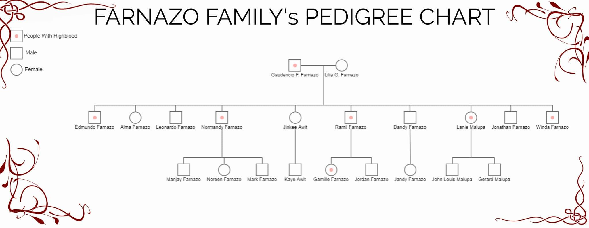

A pedigree chart is a diagram that shows the occurence and appearance or phenotypes of a particular gene or organism and its ancestors from one generation to the next, most commonly humans, show dogs and race horses.
High blood pressure (hypertension) is defined as high pressure (tension) in the arteries, which are the vessels that carry blood from the heart to the rest of the body.
Normal blood pressure is below 120/80; blood pressure between 120/80 and 139/89 is called "pre-hypertension," and a blood pressure of 140/90 or above is considered high while a systolic blood pressure of about 90 to 100 is considered low blood pressure.